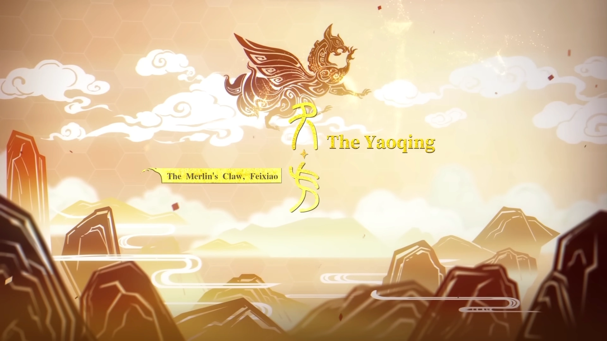

Xianzhou Luofu
O Xianzhou Luofu ( chinês :仙舟「罗浮」 Xiānzhōu "Luófú" ) é o terceiro mundo acessível em Honkai: Star Rail . Ele pode ser acessado após completar o capítulo da Missão Pioneira " Sob o Sol Ardente da Manhã" .
É uma das seis nau capitânias pertencentes à Hexafrota da Aliança Xianzhou . Ela navega como uma flecha sem volta pela galáxia, com o objetivo de erradicar os Habitantes da Abundância . A Luofu se destaca entre as outras naves por seu tratamento médico e comércio. As pessoas na Luofu são consideradas tranquilas em comparação com as de outras naves.
| Personagens | Raridade | Caminho | Tipo de Combate |
|---|---|---|---|
| Bailu | 5 Stars | A Abundância | Raio |
| Dan Heng | 4 Stars | A caça | Vento |
| Dan Heng - Imbitor Lunae | 5 Stars | A Destrição | Imaginário |
| Fu Xuan | 5 Stars | A Preservção | Quântico |
| Fugue | 5 Stars | Nulidade | Fogo |
| Huhuo | 5 Stars | A Abundância | Vento |
| Jing Yuan | 5 Stars | Erudição | Raio |
| Jingliu | 5 Stars | A Destruição | Gelo |
| Yanqing | 5 Stars | A Caça | Gelo |


Xianzhou Yaoqing
O Xianzhou Yaoqing ( chinês :曜青) é um dos seis navios-almirantes pertencentes à Hexafrota da Aliança Xianzhou .
Sushang serviu como Cavaleira das Nuvens no Yaoqing antes de ser transferida para o Luofu de Xianzhou . Sushang afirma que, ao contrário da Árvore Ambrosial do Luofu , a marca da praga do Yaoqing é uma lua. A habilidade "Fúria Lunar" dos borisin foi observada muito raramente em alguns Foxians , exceto nos Foxians do Yaoqing, onde é mais comum, que são geneticamente semelhantes aos borisin.
Sua Árbitra-Geral é Feixiao , a "Garra de Merlin", descrita como "feroz e veloz". Sushang se refere a ela como "a senhora general" e comenta que Jing Yuan não é tão boa quanto ela. Essas características podem ser vistas na busca agressiva dos Yaoqing pelas Abominações da Abundância , já que eles garantiram a vitória contra cinco forças abomináveis diferentes em um único ano, o Calendário Estelar 8098.Os Yaoqing são conhecidos por sua proeza marcial e raramente são rivalizados. Isso pode ser devido ao fato de que os borisin ainda têm muitos Raposas escravizados e ainda lutam incansavelmente pela libertação de seus parentes.
| Personagens | Raridade | Caminho | Tipo de Combate |
|---|---|---|---|
| Feixiao | 5 Stars | A caça | Vento | Jiaoqiu | 5 Stars | Nulidade | Fogo |
| Moze | 4 Stars | A Caça | Raio |
| Sushang | 4 Stars | A caça | Físico |

Xianzhou Yuque
O Xianzhou Yuque ( chinês :玉阙) é um dos navios-almirantes da Hexafrota pertencente à Aliança Xianzhou . É liderado pelo "Estrategista Vidente", o Árbitro-Geral Yao Guang . A especialidade de exportação do Yuque são os ábacos de jade , já que o minério litogênico da Terra Impura no Yuque é a fonte da tecnologia de Ábaco de Jade de Xianzhou .
| Personagens | Raridade | Caminho | Tipo de Combate |
|---|---|---|---|
| Fu Xuan | 5 Stars | A Preservção | Quântico |
| Luocha | 5 Stars | A Abundância | Imaginário |
| Yao Guang | 5 Stars | A Euforia | Físico |